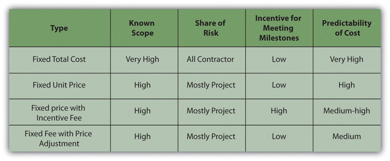
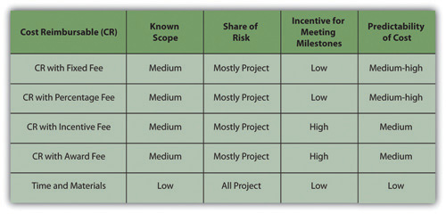

An agreement between the organization and an outside provider of a service or materials is a legal contractAn agreement that is legally enforceable.. To limit misunderstandings and make them more enforceable, contracts are usually written documents that describe the obligations of both parties.
Because legal agreements often create risk for the parent organization, procurement activities are often guided by the policies and procedures of the parent organization. After the project management team develops an understanding of what portions of the project work will be outsourced and defines the type of relationships that are needed to support the project execution plan, the procurement team begins to develop the contracting planDefines the relationship between the project and the subcontractors—supplier, vendor, or partner—and also defines a process for making changes in the agreement.. On smaller, less complex projects, the contract development and execution is typically managed through the parent company or by a part-time person assigned to the project. On larger, more complex projects, the procurement team can consist of work teams within the procurement function with special expertise in contracting. The contract plan defines the relationship between the project and the subcontractors (supplier, vendor, or partner) and also defines a process for making changes in the agreement to accommodate changes that will occur on the project. This change management process is similar to the change management process used with the project agreement with the project client.
The contracting plan of the project supports the procurement approach of the project. The following are some factors to consider when selecting the type of contract:
There are several types of contracting approaches and each supports different project environments and project approaches. The legal contracts that support the procurement plan consist of two general types of contract: the fixed price and the cost reimbursable contracts, with variations on each main type.
The fixed price contractA type of contract that pays a contractor an amount that is agreed upon at the start of the project. is a legal agreement between the project organization and an entity (person or company) to provide goods or services to the project at an agreed-on price. The contract usually details the quality of the goods or services, the timing needed to support the project, and the price for delivering goods or services. There are several variations of the fixed price contract. For commodities and goods and services where the scope of work is very clear and not likely to change, the fixed price contract offers a predictable cost. The responsibility for managing the work to meet the needs of the project is focused on the contractor. The project team tracks the quality and schedule progress to assure the contractors will meet the project needs. The risks associated with fixed price contracts are the costs associated with project change. If a change occurs on the project that requires a change order from the contractor, the price of the change is typically very high. Even when the price for changes is included in the original contract, changes on a fixed price contract will create higher total project costs than other forms of contracts because the majority of the cost risk is transferred to the contractor, and most contractors will add a contingency to the contract to cover their additional risk.
Fixed price contracts require the availability of at least two or more suppliers that have the qualifications and performance histories that assure the needs of the project can be met. The other requirement is a scope of work that is most likely not going to change. Developing a clear scope of work based on good information, creating a list of highly qualified bidders, and developing a clear contract that reflects that scope of work are critical aspects of a good fixed priced contract.
If the service provider is responsible for incorporating all costs, including profit, into the agreed-on price, it is a fixed total cost contractThe service provider is responsible for incorporating all costs, including profit, into the agreed-on price.. The contractor assumes the risks for unexpected increases in labor and materials that are needed to provide the service or materials and in the quantity of time and materials needed.
The fixed price contract with price adjustmentThe service provider is allowed an adjustment for economic changes that affect costs such as changes in currency values or inflation. is used for unusually long projects that span years. The most common use of this type of contract is the inflation-adjusted price. In some countries, the value of its local currency can vary greatly in a few months, which affects the cost of local materials and labor. In periods of high inflation, the client assumes risk of higher costs due to inflation, and the contract price is adjusted based on an inflation index. The volatility of certain commodities can also be accounted for in a price adjustment contract. For example, if the price of oil significantly affects the costs of the project, the client can accept the oil price volatility risk and include a provision in the contract that would allow the contract price adjustment based on a change in the price of oil.
Fixed price with incentive feeA contract type that provides an incentive for performing on the project above the established baseline in the contract. is a contract type that provides an incentive for performing on the project above the established baseline in the contract. The contract might include an incentive for completing the work on an important milestone for the project. Often contracts have a penalty clause if the work is not performed according to the contract. For example, if the new software is not completed in time to support the start-up of a new plant, the contract might penalize the software company a daily amount of money for every day the software is late. This type of penalty is often used when the software is critical to the project and the delay will cost the project significant money.
A project in South America to design and construct a copper mine would supply copper to several companies throughout the world. The copper that would be produced by the mine was sold before the mine was complete and ships were scheduled to make the delivery dates to processing plants.
Any delay in the project would mean a delay in shipping and significant loss to the mine, the shipping company, and the plants that were expecting the copper. Including an incentive fee for completing the project on time and including the important subcontracts increased the likelihood that the mine would make copper deliveries on time.
If the service or materials can be measured in standard units, but the amount needed is not known accurately, the price per unit can be fixed—a fixed unit price contractA contract based on an agreed-on unit price for services or materials if the amount needed is not known accurately.. The project team assumes the responsibility of estimating the number of units used. If the estimate is not accurate, the contract does not need to be changed, but the project will exceed the budgeted cost.
An example of a fixed price contract is a contract for the concrete needed for the foundation of a building. The project contracted for the concrete company to supply 1,000 cubic yards (CY) at 5,000 PSI (hardness standard) of concrete at the project site according to, and in support of, the project schedule for $70 per square yard. This is an example of a unit price contract. If the project only uses 970 CY, then the total costs will be lower. If the project uses 1,050 CY, then the costs will be higher.
An alternative pricing would be to establish a fixed price of $70,000 (1,000 CY × $70.00). Both the unit price approach and the total costs approach are fixed price contracts.
Figure 12.7 Table of Fixed Price Contracts and Characteristics
In a cost reimbursable contractA contract in which the organization agrees to pay the contractor for the cost of performing the service or providing the goods., the organization agrees to pay the contractor for the cost of performing the service or providing the goods. Cost reimbursable contracts are also known as cost plus contractsA contract that covers all allowable expenses and pays the contractor for all allowable costs with an additional amount to cover the contractor’s fee. The fee can be either a percent or an amount.. Cost reimbursable contracts are most often used when the scope of work or the costs for performing the work are not well known. The project uses a cost reimbursable contract to pay the contractor for allowable expenses related to performing the work. Since the cost of the project is reimbursable, the contractor has much less risk associated with cost increases. When the costs of the work are not well known, a cost reimbursable contract reduces the amount of money the bidders place in the bid to account for the risk associated with potential increases in costs.
The contractor is also less motivated to find ways to reduce the cost of the project unless there are incentives for supporting the accomplishment of project goals. Cost reimbursable contracts also require good documentation of the costs that occurred on the project to assure that the contractor gets paid for all the work performed and to assure that the organization is not paying for something that was not completed.
A project to build a new plant in an area that did not have sufficient water included the drilling of water wells to produce several thousand gallons of water a day for the new plant. Although geological surveys indicated there was sufficient water to meet the plant’s requirements, the number of wells needed was unknown. The project developed a cost reimbursable contract that paid the well drilling contractor for allowable costs associated with drilling the wells.
Allowable costs included the costs associated with locating all the equipment and materials to the project site, the labor and materials used to drill the wells, daily costs for the use of the drilling rigs, routine maintenance of the drilling equipment, the room and board for the workers, and administrative fees and profit. The contractor collected the costs associated with drilling the wells each month and submitted a bill to the project accountant.
The contractor is paid an additional amount above the costs. There are several ways to compensate the contractor.
A cost reimbursable contract with a fixed feeA contract that reimburses the contractor for costs, but the profit is a fixed amount. provides the contractor with a fee or profit amount that is determined at the beginning of the contract and does not change.
On the new water plant project, the project accountant reviewed each bill, including time cards for labor, invoices for materials, and other documents that supported the invoice. The contractor was then reimbursed for the allowable costs plus the administrative fee and a fixed amount for his profit.
A cost reimbursable contract with a percentage feeA contract that reimburses the contractor for costs, but the profit is a fixed amount. pays the contractor for costs plus a percentage of the costs, such as 5 percent of total allowable costs. The contractor is reimbursed for allowable costs and is paid a fee.
A small community in West Virginia was worried about the structural integrity of a dam above the town. The county council was worried the dam would break and cause loss of life and property. They contracted with a civil engineering firm to evaluate the dam structure and attest to the structural soundness. The firm hired an expert from outside the area and paid the expert $1,000.00 per day plus expenses such as meals, travel, and lodging. The civil engineering firm billed the community for the expert’s fees and expenses plus 10 percent of the total.
A cost reimbursable contract with an incentive feeA cost reimbursable contract that includes an additional incentive payment if the contractor reduces costs below a target amount or completes the work ahead of schedule. is used to encourage performance in areas critical to the project. Often the contract attempts to motivate contractors to save or reduce project costs. The use of the cost reimbursable contract with an incentive fee is one way to motivate cost reduction behaviors.
A road construction company won a contract to build a small road to the new county courthouse. The estimate to complete the road was $10 million. The contract received a cost reimbursable contract that would pay all costs plus a 3 percent fee. The contactor could also earn an incentive by performing the work for less than $10 million. The contract might include a fee that would pay the contract 20 percent of all savings below the estimated $10 million. In this case, the county got the road at a lower cost, and the contractor made more money.
The contract could have focused on schedule and paid a bonus for completing ahead of schedule. This type of contract requires that the project management team has the capability to assure the quality of work performed meets project specifications and the savings was not generated through reducing the quality of the work.
A cost plus contract with award fee reimburses the contractor for all allowable costs plus a fee that is based on performance criteria. The fee is typically based on goals or objectives that are more subjective. An amount of money is set aside for the contractor to earn through excellent performance, and the decision on how much to pay the contractor is left to the judgment of the project team. The amount is sufficient to motivate excellent performance.
The following Reuters story is about the use of an award fee to incentivize the contractor’s performance in maintaining the ship’s performance during transfer to other owners.
VSE Corporation (NASDAQ GS: VSEC) reported today that it has been awarded a $249 million cost-plus award fee contract option modification by the Naval Sea Systems Command that can be exercised by the Navy to provide one additional year of continued support to NAVSEA PMS 326 and 333 for ex-U.S. Navy ships that are sold, leased or otherwise transferred through the Foreign Military Sales (FMS) program to FMS clients.
This contract provides for services supporting U.S. ships that are sold, leased or otherwise transferred to FMS clients by providing engineering, technical, procurement, logistics, test, inspection, calibration, repair, maintenance and overhaul support services, including reactivation and modernization.
Since 1995, VSE’s International Group, GLOBAL Division (formerly BAV Division) has transferred 42 ships to foreign governments. VSE is currently reactivating EX-USNS Andrew J. Higgins (TAO-190) for transfer to Chile. Additionally, VSE actively supports various countries through the follow-on technical support requirements of the contract, providing training, maintenance, repair, and in-country infrastructure improvement assistance in support of transferred ships. Countries currently supported by VSE include Bahrain, Egypt, Japan, Mexico, Taiwan, Turkey, Poland, Philippines, Italy and Romania.
“We are extremely pleased to have won this award. It is a testament to the confidence and trust we have earned from the U.S. Navy and their foreign clients for the past 14 years,” said VSE CEO/COO/President Maurice “Mo” Gauthier. “We look forward to continuing to deliver excellence and innovative technology solutions to the world’s navies for years to come.”VSE Corporation, “VSE Awarded $249 Million Cost-Plus Award Fee Contract Option Modification by Navy,” Business Wire, August 24, 2009, http://www.businesswire.com/portal/site/home/permalink/?ndmViewId=news_view&newsId=20090824006017&newsLang=en (accessed October 5, 2009).
On small activities that have a high uncertainty, the contractor might charge an hourly rate for labor, plus the cost of materials, plus a percentage of the total costs. This type of contract is called time and materials (T&M)A contract used on small jobs with a high degree of uncertainty in which the contractor might charge an hourly rate for labor, plus the cost of materials, plus a percentage of the total costs.. Time is usually contracted on an hourly rate basis and the contractor usually submits time sheets and receipts for items purchased on the project. The project reimburses the contractor for the time spent based on an agreed-on rate and the actual cost of the materials. The fee is typically a percent of the total cost.
Time and materials contracts are used on projects for work that is smaller in scope and has uncertainty or risk, and the project rather than the contractor assumes the risk. Since the contractor will most likely include contingency in the price of other types of contracts to cover the high risk, T&M contracts provide lower total cost to the project.
Figure 12.9 Table of Contract Types and Characteristics
To minimize the risk to the project, the contract typically includes a not-to-exceed amount, which means the contract can only charge up to the agree amount. The T&M contract allows the project to make adjustments as more information is available. The final cost of the work is not known until sufficient information is available to complete a more accurate estimate.
On a road construction project, the survey team discovers an archeological site. Contractors are required to preserve archeological sites and the project team explores ways to advance the schedule while a decision is made on how to handle the site. The project issues a T&M contract to an archeologist to determine the nature of the site and develop a plan to preserve the integrity of the site. A T&M contract is awarded because the size and character of the site is unknown and the amount of time and the type of equipment needed to explore the site is also unknown.
An archeologist from the local university was issued a T&M contract to cover the labor and expenses to explore the site and develop a plan. An hourly rate was established for each member of the five-person archeological team. Equipment rental fees plus 15 percent was paid on all equipment rented and supplies used. The archeological team’s profit was incorporated into the labor rates.
A not-to-exceed amount was also included in the contract to capture the team’s estimate of the amount of work. A contract change order would increase the not-to-exceed number when more information was available.
Vendors and suppliers usually require payments during the life of the contract. On contracts that last several months, the contractor will incur significant cost and will want the project to pay for these costs as early as possible. Rather than wait until the end of the contract, a schedule of payments is typically developed as part of the contract and is connected to the completion of a defined amount of work or project milestones. These payments made before the end of the project and based on the progress of the work are called progress payments. For example, a concrete supplier on a construction project may bill the contract for the amount of concrete poured the previous month plus the profit earned during that period. On a training project, the contract might develop a payment schedule that pays for the development of the curriculum, and payment is made when the curriculum is completed and accepted. In each case, there is a defined amount of work to be accomplished, a time frame for accomplishing that work, and a quality standard the work must achieve before the contractor is paid for the work.
Just as the project has a scope of work that defines what is included in the project and what work is outside the project, vendors and suppliers have a scope of work that defines what they will produce or supply to the company. (Partners typically share the project scope of work and may not have a separate scope of work.) Often changes occur on the project that require changes in the contractor’s scope of work. How these changes will be managed during the life of the project is typically documented in the contract. Capturing these changes early, documenting what changed and how the change impacted the contract, and developing a change order (a change to the contract) are important to maintaining the progress of the project. Conflict among team members will often arise when changes are not documented or when the team cannot agree on the change. Developing and implementing an effective change management process for contractors and key suppliers will minimize this conflict and the potential negative effect on the project.
Internalize your learning experience by preparing to discuss the following.
If you were a contractor, which type of contract would you prefer most and which would you like least? Explain your choices. Your explanation should demonstrate that you are familiar with the definitions of the contracts you chose and at least one similar type of contract.